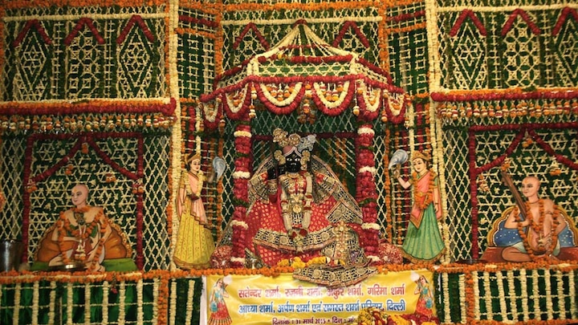
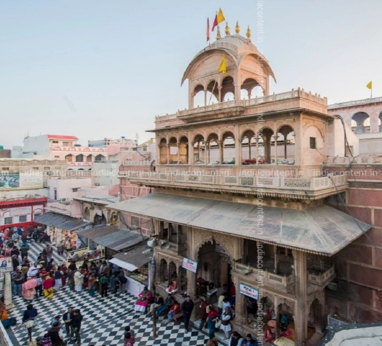
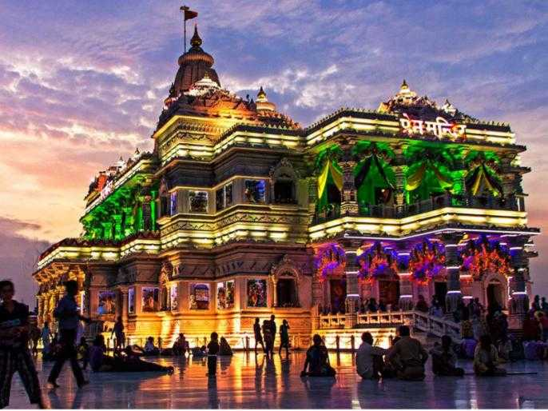
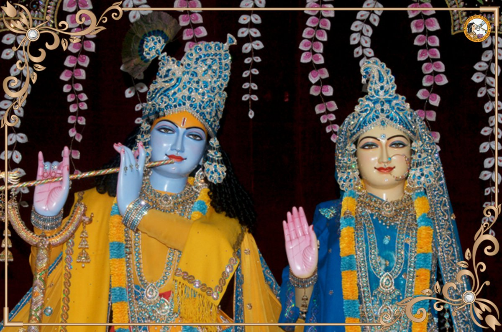
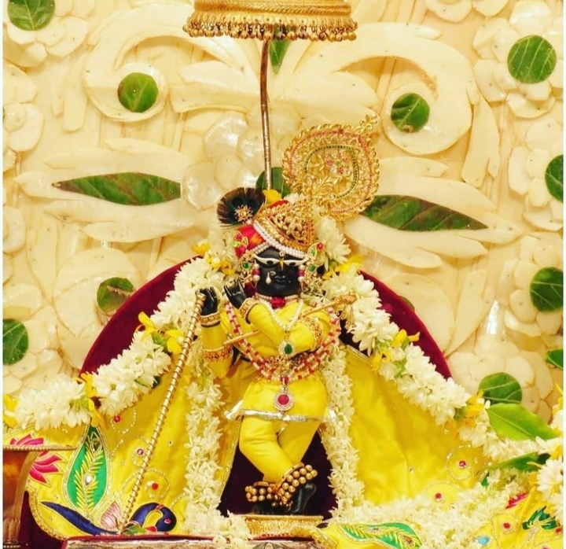
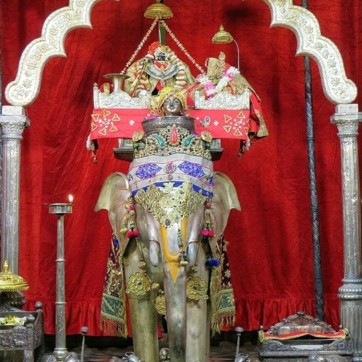
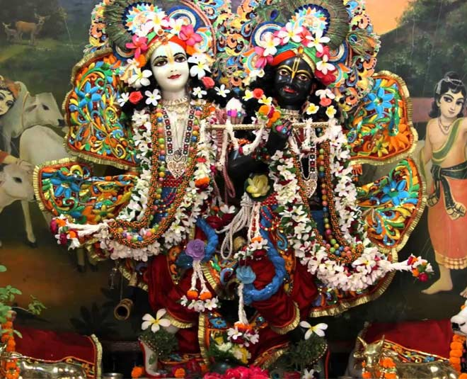
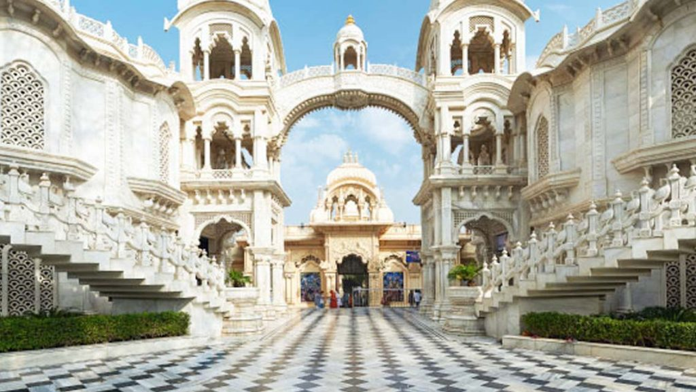
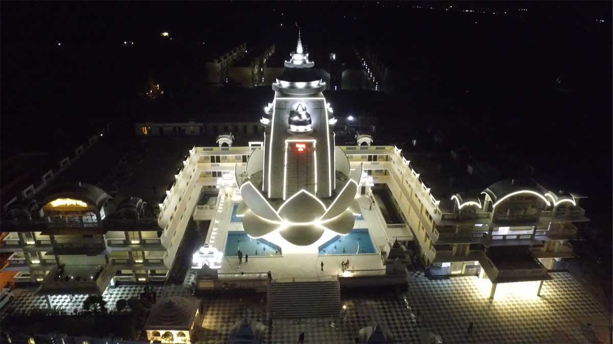
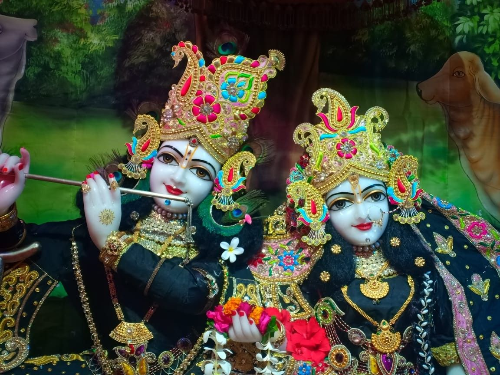

ATTRACTION SITES OF VRINDAVAN
Banke Bihari Mandir
Prem Mandir
Radha Raman Temple
ISCKON Temple
Priyakant Ju Temple
Banke Bihari Mandir

Shri Bankey Bihari Mandir is a Hindu temple dedicated to Lord Krishna, in the holy city of Vrindavan in the Mathura district of Uttar Pradesh, India. It is situated near Shri Radha Vallabha Temple. Bankey Bihari Ji was originally worshipped at Nidhivana. Bankey means "bent in three places" and Bihari means "enjoyer".
The image of Lord Krishna stands in the Tribhanga posture. Swami Haridas originally worshipped this devotional image under the name of Kunj-Bihari ("one who enjoys in the groves (kunj) of Vrindavan"). 
Rituals
During
" Jhulan Yatra "
, the
swing festival
of Lord Krishna, there are a number of silver-plated and some solid silver ornamented swings, which are shown at this time. The main day of Jhulan Yatra is the third day of the waxing moon, at which time Shri Bankey Bihari is placed on a golden swing (hindola). The curtain before the Deities is not left open like at other temples. Every few minutes, the curtain is pulled shut and then opened again. It is said that the brilliant eyes of Shri Bankey Bihari will make one unconscious if seen for too long a stretch. It is the only temple where loud temple bells are not used to wake Krishna in the morning. It is believed improper to wake a child with a start. He is woken gently. There are thus no bells even for Aarti, as it might disturb Him.
For more details of BihariJi , kindly visit ;
www.bihariji.org
Prem Mandir

Prem Mandir (lit. The Temple of Divine Love) is a Hindu temple in Vrindavan, Mathura, India. It is maintained by Jagadguru Kripalu Parishat, an international non-profit, educational, spiritual, charitable trust. The complex is on a 55-acre site on the outskirts of Vrindavan. It is dedicated to Radha Krishna and Sita Ram. Radha Krishna are on the first level and Sita Ram are on the second level. The temple structure was established by the fifth Jagadguru, Kripalu Maharaj. Figures of Shri Krishna and his followers depicting important events surrounding the Lord's existence cover the main temple.  It is sister temple of Bhakti Mandir which was opened in 2005 and another sister temple which is known as Kirti Mandir, Barsana opened in 2019The foundation stone was laid by Jagadguru Shri Kripalu Ji Maharaj in the presence of thousand devotees on 14 January 2001. It took approximately 1000 artists about 12 years to build the complex.
The Vrindavan site was developed by Kripalu Ji Maharaj, whose main ashram was at Vrindavan. He dedicated the gift of love to Shri Vrindavan Dham.
Prem Mandir is constructed entirely of Italian marble. The total dimensions of the temple including its flag is 125 ft. high, 190 ft. long and the 128 ft. wide raised platform serves as the seat of the two-storeyed white monument.
For more details of Prem Mandir , kindly visit ;
www.premmandir.com
Radha Raman Mandir

Radha Raman means the lover (ramana) of Srimati Radha. The temple was established over 500 years ago by Gopala Bhatta Goswami. At the age of thirty, Gopala Bhatta Gosvami came to Vrindavan.
Inside the temple complex, the samadhi of Srila Gopal Bhatta Goswami is also situated. There the rarely available Unag vastra of Sri Chaitanya Mahaprabhu is kept.  The Prasad for Shri Radha Raman Ji is prepared by the male members of the Goswami families in the temple kitchen. The fire in the kitchen lit in early days of the temple still continues today. The Goswami families are allotted a calendar in advance for their personal seva (service) period and they perform seva accordingly. They also invite their disciples during their period and celebrate major family functions and ceremonies.
The current acharya of the temple is Shrivatsa Goswami.
ISCKON Temple

Iskcon Temple Vrindavan or Sri Krishna Balrama Temple is acknowledged for being the first temple constructed by the International Society for Krishna Consciousness (ISKCON). Built in 1975 by the ISKCON cult, the foundation of the shrine was laid by Swami Prabhupada (founder of ISKCON) himself. Located at Raman Reti in Vrindavan, the temple can be easily reached by regular transport from the western part of Uttar Pradesh. From Delhi, one can get in touch with the temple by taking regular buses or by hiring taxis.  In the vein of other temples made by the society, Sri Krishna Balrama Mandir is too called as Iskcon Temple all over. After the original construction, the temple complex has extended evidently, to accomplish the vision of Swami Prabhupada, for an international center in Vrindavan. The temple stands on the banks of Yamuna River, where Sri Krishna along with Balrama used to herd their cows. The magnificent structure of the Iskcon Temple comes across the sight, as and when, one enters the holy lands of Vrindavan.
Priyakant Ju Temple

Priyakantju Temple is dedicated to Lord Krishna and the temple ensconced the beautiful and attractive deities of Lord Krishna and Radha. The theme of the construction of this temple is Radha Krishna, Radharani is in the form of Priya Ji and Bhagwan Shri Krishna takes that of Kant ju giving darshan to the devotees. The temple is situated in the holy city of Vrindavan in Mathura district, Uttar Pradesh. Built on the structure symbolizing lotus flower, the temple is almost 125 feet high. The temple is built along roadside and is far above the ground level. The temple is covered with ponds from both sides in which fountains are also fitted. Temples of Lord Ganesh, Hanuman and Lord Shiva are built at the four corners of the temple. Makrana marble from Rajasthan is used in the construction of the temple. The temple reflects a renaissance in the ancient Indian art and architecture.  The Vishwa Shanti Charitable Trust resolved to build the Priyakantju temple in 2007. Shri Priyakant ju temple was established by Shri Devikinandan Thakur, the President of the Vishwa Shanti Charitable Trust in 2009 and it took almost seven years to complete. The first phase of temple construction started in June 2012. Priyakantju Temple was opened for public in February 8, 2016. The temple was inaugurated by Sri Kaptan Singh Solanki, Governor of Haryana. Lakhs of devotees participated in the inauguration function.
Thakur Aapke Upar Kripa Kare , Aur Jaldi Aap Ko Bhi Prabhu Ki Nirali Chata Ke Darshan Ho"
TRANSLATION ; "may thakur bless you and soon you also get to see lord's unique style"